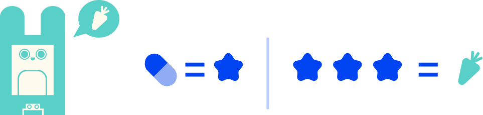
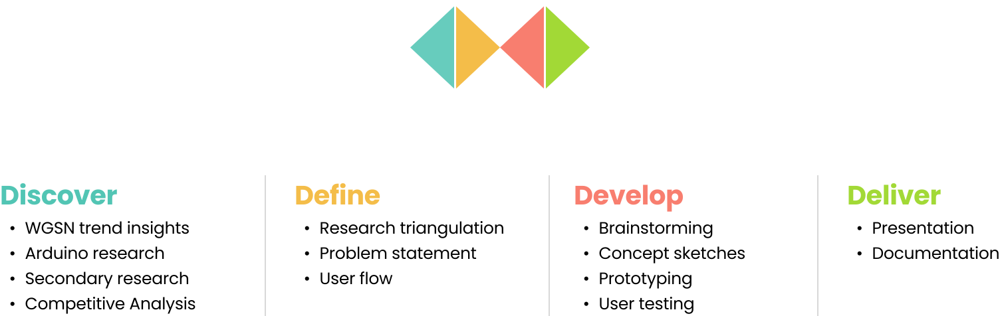

CODING, PHYSICAL COMPUTING, UX/UI
A digital pet companion designed to help kids develop medical adherence.
Irene Justo, Sara Khalil
Builder, Designer, Programmer
Oct-Dec 2024
Arduino, Figma, ProtoPie
Chronic illnesses don't discriminate age. An estimated 10-30% of children suffer from chronic health problems, often having to take regular medication. is the ability to stick to a prescribed medication routine, however, a study found that 50-88% of children have trouble with this.
Pills are the most common form of medicine, but the products currently on the market to increase adherence aren't suitable for younger users at all—being either too complicated or lacking features to reinforce positive behaviour.
According to a WGSN forecast, the market for automated pill dispensers is estimated to grow at rate of 9.5% reaching a value of $4 billion by 2027.
The lack of a solution for pediatric medical adherence paired with the projected growth and demand of automated pill dispensers presents an opportunity to address the gap in the market by creating an automated pill dispenser that is designed for the needs of children.
“Meddy” is a combination of “medicine” and “buddy”—a digital pet companion that functions as an automated pill dispenser. It takes into consideration the behaviours, preferences and cognitive levels of children.
Its conceptual and UI design borrows market trends from WGSN, while serial data communication using Arduino and ProtoPie work together to create gamified process that makes medicine-taking less intimidating for kids.
Parents would set up a time range for when the child is expected to take the medicine.
Using a sensor, Meddy will detect if the child has walked by within that time frame and activate a jingle to catch their attention.
Meddy will communicate with the user asking if they're ready to take their pill and dispense it if they are.
The two main parts to increase medication adherence is gamification and companionship.
Every interaction with Meddy will feel like talking with a friend. Missions will also be given out by Meddy which the user can complete by taking their medication. By completing missions, the user is under the impression that they're helping out Meddy which reinforces companionship as it will feel like they're helping out a friend. Being able to see how close they are to the goal of helping Meddy will make the child look forward the next interaction.
The project was broken down into phases following the Double Diamond:
